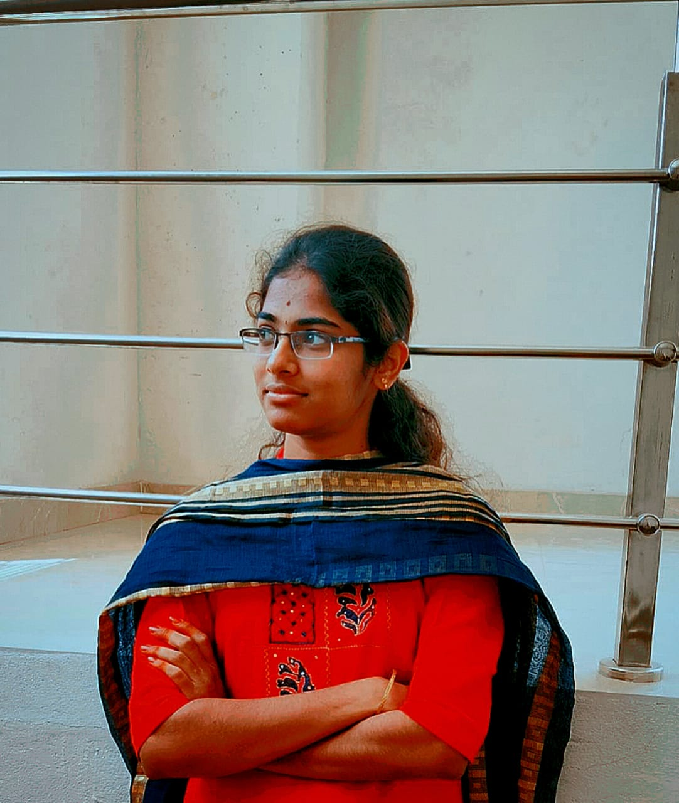

Aspiring software developer with a strong interest in web technologies, eager to contribute technical skills, problem-solving abilities, and creativity to build efficient and user-friendly applications.

This project focuses on developing an automated mechanism for cleaning classroom boards without manual intervention. The system helps in reducing manual effort of teachers, saving classroom time and maintaining cleanliness. It improves the teaching environment and enhances overall classroom efficiency.
Designed a digital solution to manage student queues during peak lunch hours in college canteens. The system helps reduce waiting time, improves student flow management and provides a better user experience for students ordering food. This project focuses on improving operational efficiency and reducing congestion.
Email : kavipriyanachimuthu@gmail.com
LinkedIn : Kavipriya Nachimuthu
Location : Dharapuram, Tiruppur District